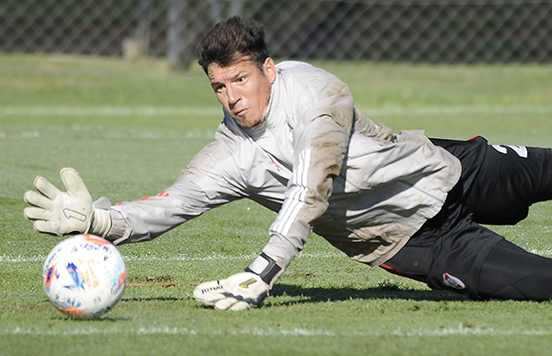

Luego de la goleada, River se enfoca en la Copa
El plantel se entrenó este domingo por la mañana con la mente puesta en el partido del jueves frente a Fluminense, en Brasil.

Después del 5-0 en Santiago del Estero, que le permitió al Millonario seguir en los puestos de clasificación en la Copa de la Liga, el plantel profesional se movió este lunes por la mañana en el predio de Ezeiza.
Allí, un grupo realizó trabajos regenerativos y de capacidad aeróbica; el otro, ejercicios físico-técnicos en cancha reducida. Matías Suárez se entrenó de manera diferenciada.
Mañana, la práctica será a las 10 en River Camp a puertas cerradas.